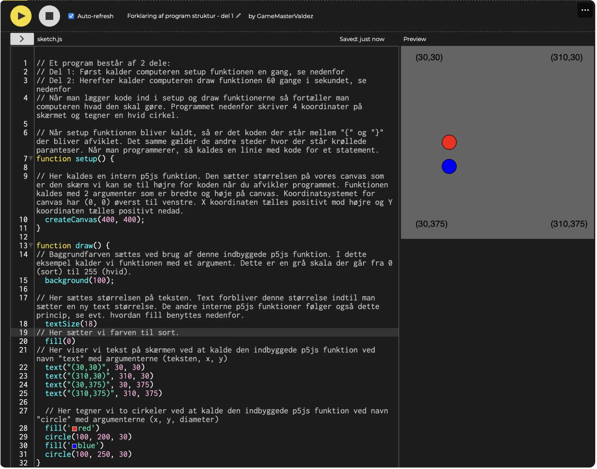
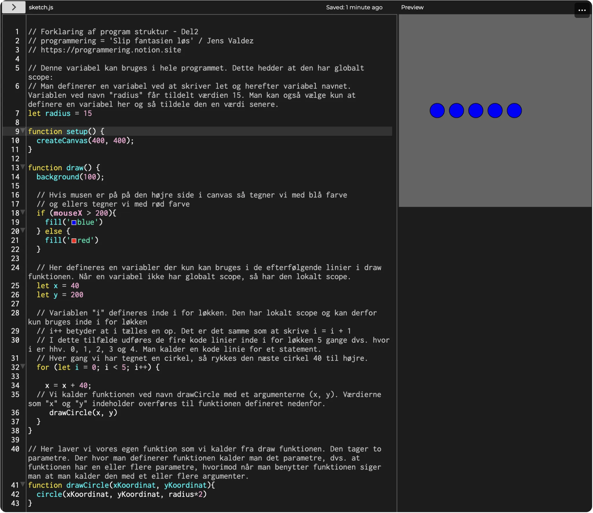
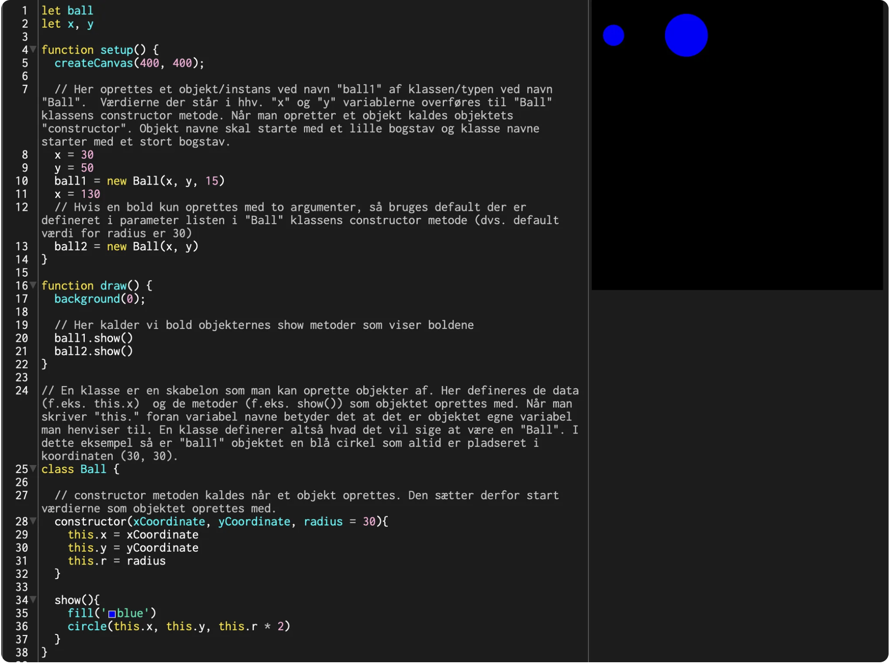
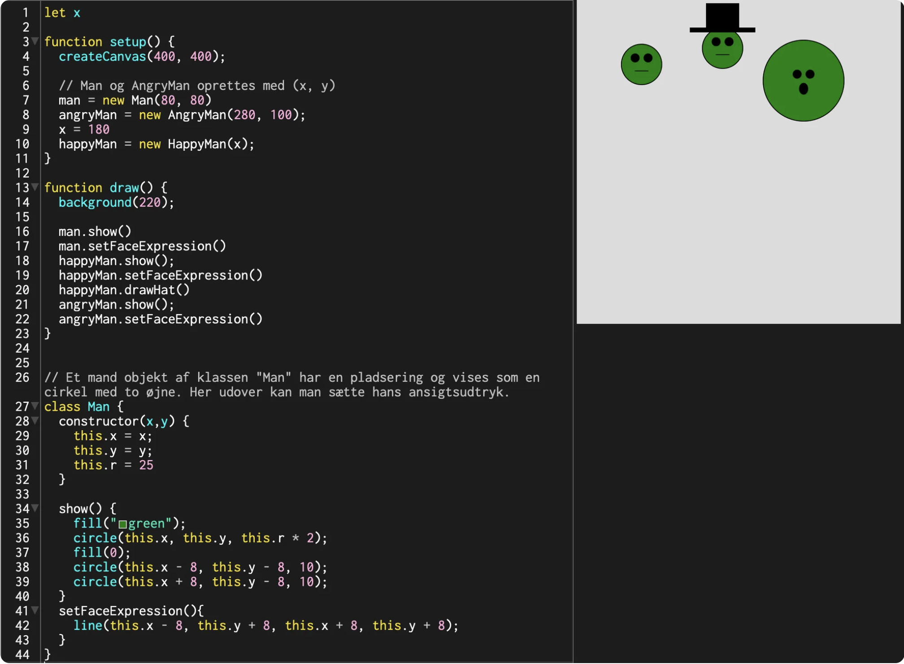
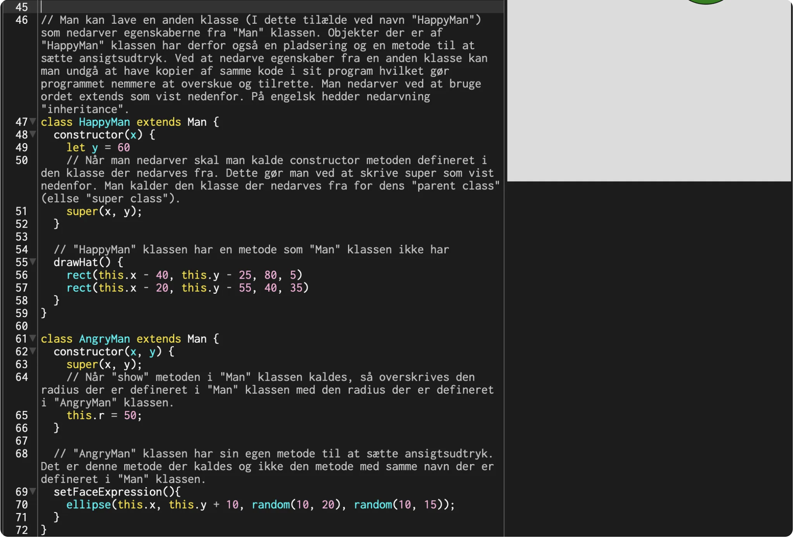
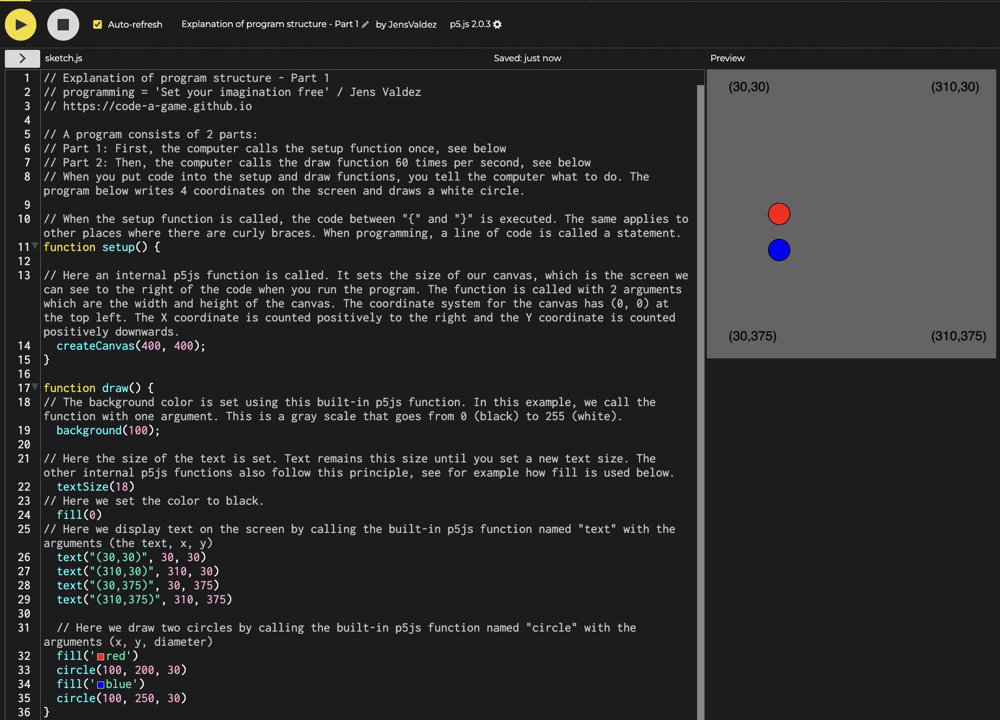
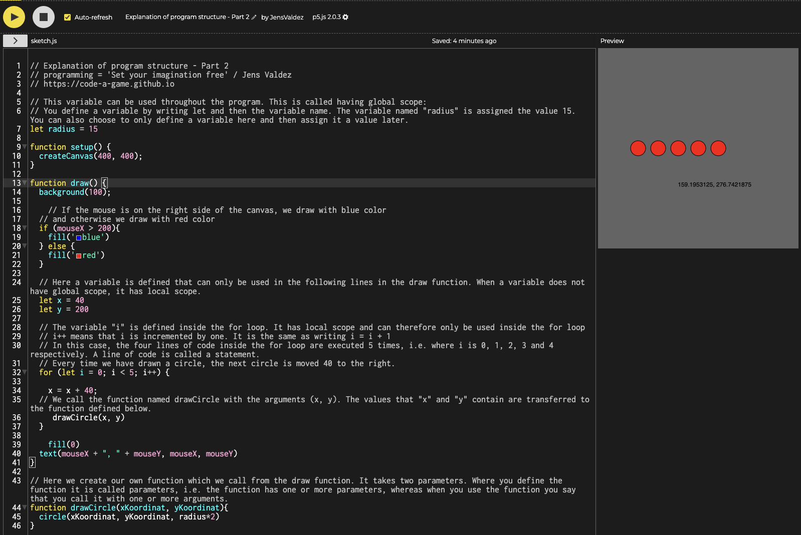
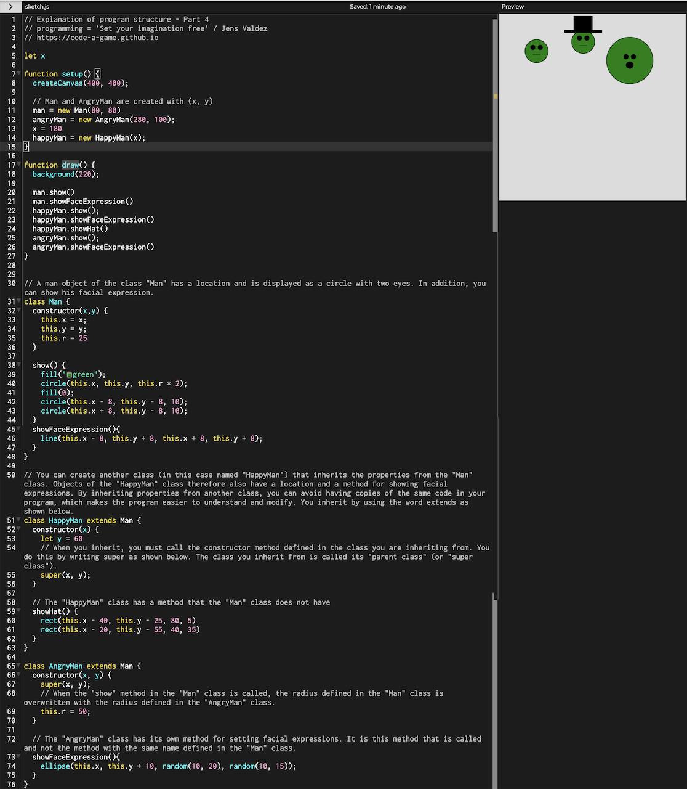
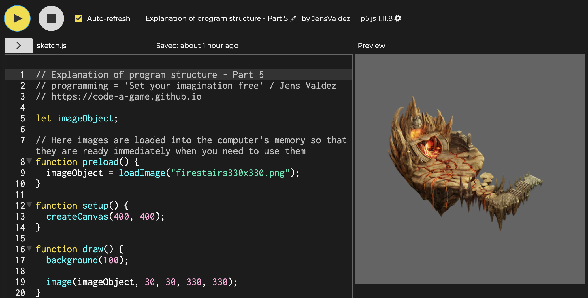

Forklaring af program struktur
Indhold
Indledning
Der er en del at forklare med hensyn til hvordan et program er opbygget og hvad man har af muligheder. Jeg har derfor valg at dele forklaringen op. Nedenfor er vist stor set alt hvad man skal vide med hensyn til hvordan et program er opbygget og hvad man har af muligheder. Resten er udelukkende at skrive kode der kalder de interne p5js funktioner.
Vigtigt: Det gør ikke noget hvis du ikke forstår det hele. Vi kommer til at lave en masse spændende opgaver som langsom introducerer de forskellige elementer. Nedenstående kan derfor bruges som reference hvis man er i tvivl om hvordan man kan opbygge et program.
Forklaring af program struktur - Del 1 - Koordinat system og brug af interne p5js funktioner
Klik på billedet for at gøre det større.

Forklaring af program struktur - Del 2 - Variabler, scope og egne funktioner
Klik på billedet for at gøre det større.

Forklaring af program struktur - Del 3 - Objekt Orienteret Programmering
Klik på billedet for at gøre det større.

Forklaring af program struktur - Del 4 - Nedarvning (Engelsk: Class Inheritance)
Klik på billederne for at gøre dem større.

Forklaring af program struktur - Del 5 - Brug af billeder
Klik på billedet for at gøre det større.
Explanation of Program Structure
Table of Contents
Introduction
There is a lot to explain regarding how a program is structured and what possibilities you have. I have therefore chosen to divide the explanation. Below is shown almost everything you need to know about how a program is structured and what possibilities you have. The rest is solely writing code that calls the internal p5.js functions.
Important: It doesn't matter if you don't understand everything. We will be doing a lot of exciting tasks that slowly introduce the different elements. The following can therefore be used as a reference if you are in doubt about how to structure a program.
Explanation of program structure - Part 1 - Coordinate system and use of internal p5.js functions
Click on the image to enlarge it.

Explanation of program structure - Part 2 - Variables, scope, and custom functions
Click on the image to enlarge it.

Explanation of program structure - Part 3 - Object-Oriented Programming
Click on the image to enlarge it.
Explanation of program structure - Part 4 - Class Inheritance
Click on the images to enlarge them.

Explanation of program structure - Part 5 - Using images
Click on the image to enlarge it.
